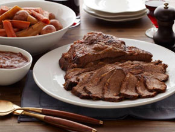

KOSHER KORNER
BRAISED BRISKET WITH ROOT VEGETABLES
By Brenda Storch, Messianic Rebbetzin of The Tabernacle

Hanukkah, a festival commemorating deliverance from religious oppression and the rededication of the Holy Temple in Jerusalem, is a beloved Jewish holiday. Deep- or shallow-fried dishes like jelly doughnuts and potato latkes abound, serving as a delicious reminder of the "miracle of the oil" at the heart of the Hanukkah story, when a single day's worth of oil kept the Temple flame alight for a full eight days. While every family's tradition is different, brisket is a go-to standby, often enjoyed while children spin the dreidel for gelt, chocolate coins wrapped in gold foil.